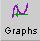
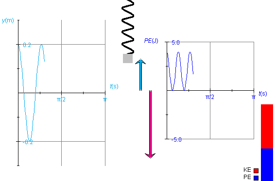

Instructions
This page is designed to get you started using the applet. The applet should be open. The step-by-step instructions on this page are to be done in the applet. You may need to toggle back and forth between instructions and applet if your screen space is limited.
 Potential and Kinetic Energy
Changes
Potential and Kinetic Energy
Changes
 Graphs of Kinetic, Potential, and
Mechanical Energy vs. Time
Graphs of Kinetic, Potential, and
Mechanical Energy vs. Time
 Dependence of the Potential
Energy on System Parameters
Dependence of the Potential
Energy on System Parameters
Exercise 1. RESET  the applet.
the applet.
Set the spring constant to k = 200 N/m, and keep the mass and the amplitude at their default values of m = 1.25 kg and A = 0.20 m, respectively. Display the Data box.
Start the motion from its default position, which has the block in its top position, such that the phase has the value d = p/2 = 1.57 rad. PLAY the motion, and PAUSE it at t = 0.70 s. The spring, energy bar, and Data box should look as in Figure 1 below.
Figure 1
The ratio of the kinetic energy portion (red) and potential energy portion (blue) of the energy bar should correspond to the ratio of these energies as displayed in the Data box. In the case shown in Figure 1, this ratio has the value KE/PE = 1.03/2.97, which is close to 1/3.
Exercise 2. Continuing from Exercise 1, REWIND the applet. The block should be back in its top position. Drag the block from the top to the bottom of its range of motion, and observe the variation in the potential energy.
You should find that the potential energy goes from its maximum value when the block is at the top, to its minimum value when the weight is at the equilibrium point, back to its maximum value when the block is at its lowest point.

Exercise 1. RESET the applet. Start the motion at t = 0 with the suspended block at its top position. Display both the position vs. time and potential energy vs. time graphs and arrange them as in Figure 2 below. Set the spring constant to k = 200 N/m, the mass to m = 1.00 kg, and keep the amplitude at A = 0.20 m.
PLAY the motion until the oscillation has gone through one complete cycle and a little bit beyond, so that the block has just started moving down again. The two graphs should look similar to what is shown in Figure 2. Ignore the position and velocity vectors for the time being.
To display the graphs, press the Graphs toggle button  and check the graphs in the panel that opens up. For details on using the Graph panel, please see Point 4 in Help.

Figure 2
y is the position of the center of the block. The y-axis increases in the upward direction, with y = 0 at the equilibrium position. The potential energy PE is proportional to y2,
PE = (k/2)y2 .
Therefore, as y decreases, reaches 0, and decreases further to negative values, PE decreases, reaches 0, and increases again to positive values. As a result, the frequency of oscillations of the potential energy PE is twice that of the frequency of the displacement y.
Observe that on the horizontal axis the time t is plotted in seconds (s). Don't be mislead by the unusual divisions labeled p/2 and p. These are in seconds, not in radians. Thus, the point where the y vs. t graph crosses the t-axis for the first time is at a time slightly before t = p/8 s. The reason for dividing the time axis in this way is that the expression for the period T of the oscillating spring is
T = 2p (m/k).
(m/k).
The presence of p in this expression makes it natural to divide the time axis into segments that are multiples (or fractions) of p.
Also observe that the maximum y-value is equal to the amplitude, A = 0.20 m, and that the maximum value of PE is related to that of A according to the expression for PE given above,
PE = (k/2)A2 = (200/2)×0.202 = 4.0 J .
Exercise 2. Continuing from Exercise 1, hide the position vs. time graph and display the kinetic energy vs. time graph instead, in addition to the potential energy vs. time graph. Arrange the graphs so that they don't overlap. To do so, move one graph at a time by selecting only that graph's movability checkbox in the Graph Panel.
REWIND the applet to put the block back to its top position, and click Reset in the Graph panel (not the main Reset button) to clear the two graphs. Then PLAY the motion again through a little bit beyond one cycle.
You should again obtain the PE vs. t graph shown in Figure 2 above. The KE vs. t should look like the "inverse" of the PE vs. t graph, i.e., KE should be decreasing when PE is increasing and vice versa.
Exercise 3. Continuing from Exercise 2, check the "position" and "velocity at origin" checkboxes in the Graph Panel to display the position and velocity vectors of the oscillating block, in cyan and magenta, respectively. These vectors are shown in Figure 2 above.
The potential energy is proportional to the square of the length of the position vector and the kinetic energy is proportional to the square of the length of the velocity vector.
Select the Zoom button  .
.
The velocity vector and the two graphs should decrease by a factor 2 in length or height, respectively. Then deselect the button again to restore the original heights.
The energy bar is programmed to not be affected by the Zoom button because its total length will not grow beyond the standard height of the applet window under the conditions available in the applet.
Exercise 4. Continuing from Exercise 3, REWIND the applet and Reset the two graphs in the Graph panel. Change the mass from m = 1.00 kg to m = 0.50 kg. PLAY the motion again through one cycle and a bit.
You should be able to observe the same kinetic and potential energy graphs as in Exercise 3, but the velocity vector should have a larger amplitude than before. Depending on your window size, you may have to use the Zoom button to keep the entire vector within the applet window at all times.
The reason for the change in the magnitude of velocity without corresponding change in the kinetic energy is as follows. Changing the mass does not affect the potential energy. Since the total mechanical energy E is equal to the potential energy at the start when KE = 0, the total energy is not affected by a mass change either. Therefore, the kinetic energy cannot be affected since KE = E - PE.
However, if KE is not affected by a mass change, then the speed must be affected, in accordance with the equation
KE = (m/2)v2 .
Exercise 5. RESET the applet, and change the value of the spring constant from k = 80 N/m to k = 200 N/m. Display all three energy graphs, for potential, kinetic, and mechanical energy. Keep all three graphs superimposed on each other in one place.
PLAY the motion through one cycle and a bit. You should obtain graphs like those in Figure 3 below.

Figure 3
The three graphs may have to be moved a bit to not make them overlap with the energy bar. To move them, check the movability icon for all three graphs in the Graph panel and then drag the graphs. They will move together as one unit.
Observe that the green graph for the energy E is a straight horizontal line at the tops of the KE and PE graphs. Also observe that the graphs have gone through two cycles and a bit, while the motion itself has gone through one cycle and a bit.
The applet lets you vary the values of the spring constant k, the mass m, and the amplitude A. In the following Exercises you will be asked to examine the dependence of the potential energy on these three variables. More precisely: the potential energy is a function of time during the weight's oscillation and takes on its maximum value both at the top and bottom positions of the block. The Exercises are about this maximum value, whether it depends on k, m, and A. In this connection, remember the expression for the potential energy quoted above,
PE = (k/2)y2 .
Exercise 1 - Spring Constant
RESET the applet, display the Data box, and change the spring constant from k = 80 N/m to k = 50 N/m.
Make a drawing of the height of the potential energy bar, and record the value of the potential energy as given in the Data box.
Change the spring constant to k = 200 N/m. Again, draw the potential energy column, next to the one already drawn, and record the value of the potential energy shown in the Data box. Are the results consistent with the equation above for the potential energy?
Observe that making the spring constant stiffer will be indicated visually by a thickening of the spring and by a shortening of the spring. The applet is designed to keep the block in the center of the applet window when the system is in equilibrium. Thus, as the spring gets stiffer (k increases), the point from which the spring is suspended moves down towards the fixed equilibrium point. The point of support is above the applet window and therefore invisible, but you will be able to see a downward movement of the turns of the spring as the spring gets stiffer.
Exercise 2 - Mass
Continuing from Exercise 2, change the mass of the suspended block from m = 1.25 kg to m = 2.00 kg.
Increasing the mass of the suspended block is represented visually by an increase in the size of the block. Increasing the mass will also stretch the spring (the invisible point of suspension will move upward).
Is there any change in the height of the potential energy bar or in the value of the potential energy shown in the Data box? Are your observations consistent with the expression for the potential energy given above?
Exercise 3 - Amplitude
Change the amplitude from A = 0.20 m to A = 0.30 m.
Draw the height of the potential energy column next to the columns drawn earlier, and record the value of the potential energy shown in the Data box. Are the changes you observe consistent with the expression for the potential energy given above?
Exercise 1. RESET the applet. Display the Data box. Click on the Data box, and drag it to a convenient location in the applet window.
As an example, Figure 4 below reproduces Figure 1. It shows the contents of the Data box corresponding to the parameter values shown on the sliders at the bottom of Figure 1 and corresponding to the phase d and time t shown in the Data box.
Reproduce the values in Figure 4 by recreating these settings and PLAYing the motion to t = 0.70 s. STEP the motion when you get near t = 0.70 s.
Figure 4
The top half of the Data box shows the constants and initial conditions for the motion, the bottom half the values of the variables at time t. The mechanical energy E is shown only in the top portion because it is a constant of the motion. For a detailed explanation of the items in the Data box, please see Point 3 in Help.